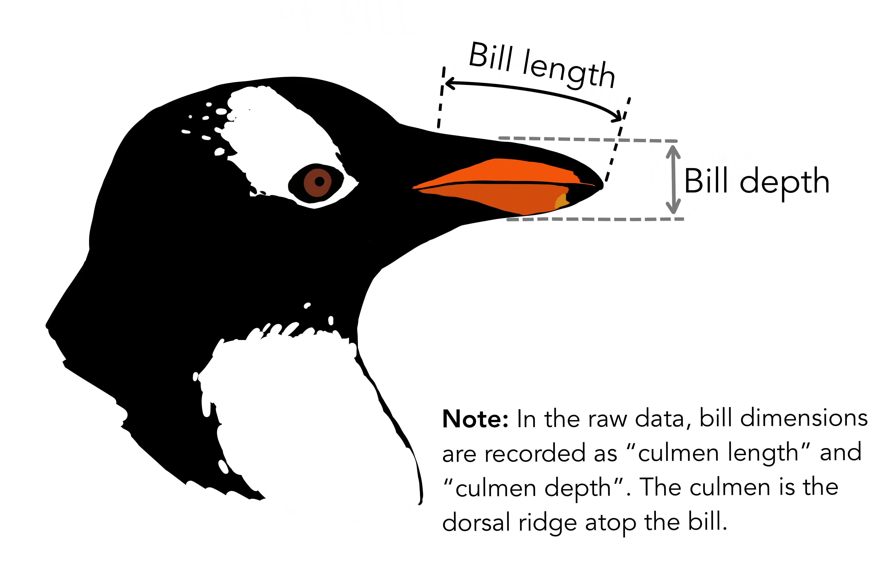

Post
Palmer's Penguins
Penguins at the Palmer Station Antarctica Long-Term Ecological Research site

Introduction
The data presented here was collected as part of research to study Antarctic penguins’ foraging behavior and its relationship with environmental variability. The canonical paper from Gorman et al. presents the research in detail. Palmer's Penguins is an alternative to the Iris sample dataset.
Meet the penguins

The palmerpenguins data contains size measurements for three penguin species observed on three islands in the Palmer Archipelago, Antarctica.
These data were collected from 2007 - 2009 by Dr. Kristen Gorman with the Palmer Station Long Term Ecological Research Program, part of the US Long Term Ecological Research Network. The data were imported directly from the Environmental Data Initiative (EDI) Data Portal, and are available for use by CC0 license (“No Rights Reserved”) in accordance with the Palmer Station Data Policy.
At the Palmer Station, three species of Penguins were measured on various structural aspects like body mass, bill Length, bill depth and flipper length. PAL scientists have documented an 85 percent reduction in Adélie penguin populations along the western Antarctic Peninsula since 1974.
Bill Length vs. Body Mass
Bill Length vs. Bill Depth
Penguin species
Simpson's Paradox
If you measure the relationship between culmen depth and length in a mixed population of penguins, it is positively correlated in each of the three species (bigger penguins with the longer culmens also tend to have the deeper ones); however, the Gentoo population has a smaller aspect ratio of depth against length, and the overall correlation across the three species is negative. This is called Simpson’s paradox, and it applies to any data that contains underlying populations with different properties or outcomes.

References
Individual data can be accessed directly via the Environmental Data Initiative:
-
Palmer Station Antarctica LTER and K. Gorman, 2020. Structural size measurements and isotopic signatures of foraging among adult male and female Adélie penguins (Pygoscelis adeliae) nesting along the Palmer Archipelago near Palmer Station, 2007-2009 ver 5. Environmental Data Initiative. https://doi.org/10.6073/pasta/98b16d7d563f265cb52372c8ca99e60f.
-
Palmer Station Antarctica LTER and K. Gorman, 2020. Structural size measurements and isotopic signatures of foraging among adult male and female Gentoo penguin (Pygoscelis papua) nesting along the Palmer Archipelago near Palmer Station, 2007-2009 ver 5. Environmental Data Initiative. https://doi.org/10.6073/pasta/7fca67fb28d56ee2ffa3d9370ebda689.
-
Palmer Station Antarctica LTER and K. Gorman, 2020. Structural size measurements and isotopic signatures of foraging among adult male and female Chinstrap penguin (Pygoscelis antarcticus) nesting along the Palmer Archipelago near Palmer Station, 2007-2009 ver 6. Environmental Data Initiative. https://doi.org/10.6073/pasta/c14dfcfada8ea13a17536e73eb6fbe9e.